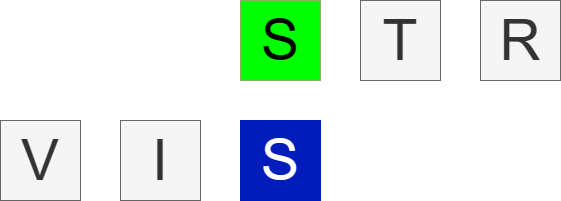

<app-navbar></app-navbar>
<div>
    <div class="flex justify-center items-center">
        <video class="w-9/12 h-9/12 blur z-0" autoplay muted loop>
            <source [src]="videoLink" type="video/mp4">
        </video>
        <div class="absolute center-parent flex flex-col justify-center items-center z-5 gap-10">
            
            <div class="flex flex-row gap-10">
                <button class="font-bold bg-skin-fill-quaternary text-sm rounded-lg border-skin-icon-separator border-2 p-2 hover:bg-skin-fill-tertiary-hover" *ngFor="let algorithm of environment.supportedAlgorithms" (click)="sharedRouterFunctions.changePage('algorithm-visualiser/' + algorithm.urlParam , router)"><b>{{algorithm.name}}</b></button>
            </div>
        </div>
    </div>
</div>
